第4章 统计和概率基础
现在我们知道了怎样把原始时间序列转化为xts对象，怎样使用quantmod从本地和远程库里检索数据，以及如何用ggplot2创造基本的可视化效果。接下来，我们就着手探索数据模式，寻找可利用的交易机会。磨刀不误砍柴工，行动前我们先来了解一下金融时间序列的相关统计特性。
本章涵盖统计分析基础，试图揭开统计术语的神秘面纱。
什么是统计量？
从实用主义的角度出发，统计量可以视为对一组数值进行运算的函数（公式），但是这种说法略欠严谨。例如，计算N个数算术平均值的公式为。算术平均值自然是一个统计量，因为它满足我们的基本定义。另一个统计量可以是。 同样地，公式明确指出输入值是这组X。到现在我们还没有讨论过统计量的有用性。一些熟悉的统计量包括方差，标准差，峰度和相关系数等。
总体和样本
考虑一组数值： 102，103.2，102，101.2，499，103.2，101.23，99.2。我们也许想要回答下面这些问题：
- 这些数据来自哪里？
- 它们是全体数据，还是我们应该期待还有更多？
- 数据中有没有呈现出可预测的序列？
基于前面的脑力练习，很明显地，考虑到有限的数据来源信息，我们需要做一些预先假设。如果已知这些是集合中全部的数据，那么我们就说整个总体是可得的。如果这些数据抽样自一个更大的集合，就称为一个样本。
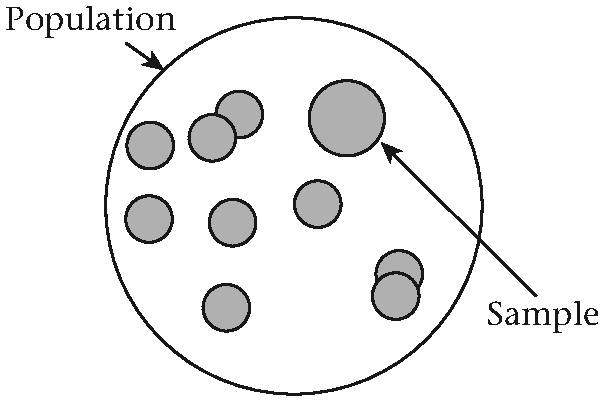
图4.1 总体与样本
很多时候，很难分清楚我们是与样本还是总体数据在工作。拿不准的时候，稳妥起见，我们假设数据为样本。能获得所有还是部分数据，令随后的分析方法有天壤之别。比如，如果想测量地球上所有山峰的平均高度，定义总体为地球上所有山峰的高度。来自此总体的一个样本就是地球上的很多山峰。从总体中抽样是一个棘手的问题1。
为了最终回答平均山峰高度的问题，你得测量世界上每一座山峰的高度。即使有了总体数据，在这一数据集上计算统计量也会费用惊人。样本就可以来解围了。经过合适的选取，无偏样本会极大地有助于回答关于总体统计量的问题。
可以把统计量想象成将样本特性转化为总体特性的数学工具。虽然过度简化，但它确实有助于启发式思考来保持基本概念通俗易懂。对基础数据作假设，然后用样本平均统计量来近似描述总体参数。观测值的数量和选择观测值的方法会影响最终结果。
直观地说，样本中观测值越多，样品的平均高度将接近真实的总体平均高度。给定大小的样本越多，真实总体平均的估计量也更优。统计学家给这两个朴素的概念起了动听别致的名字：大数定律和中心极限定理[117, 126]。
下面的例子用R产生1,000,000个正态（高斯）分布随机数，即总体。我们将均值设为2.33，标准差为0.5。然后从此总体抽出大小不一的样本，并计算每个样本的均值。最后结果是这些样本均值的分布图。我们已经明白总体均值的来历（我们创造了它），图有助于描述大数定律的收敛性。
# 设置随机数种子
set.seed(100)
X <- rnorm(1000000, mean = 2.33, sd = 0.5)
mu <- mean(X)
sd <- sd(X)
hist(X, breaks = 100)
abline(v = mu, lwd = 3, lty = 2)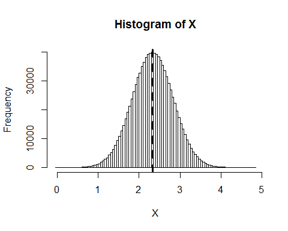
图4.2 高斯总体
函数set.seed()保证每次函数和参数不变而得到同一批随机数：
set.seed(12)
rnorm(5)
## [1] -1.4805676 1.5771695 -0.9567445 -0.9200052 -1.9976421再次运行rnorm(5)，但不在前面加set.seed(12)会产生一组完全不同的数：
rnorm(5)
## [1] -0.2722960 -0.3153487 -0.6282552 -0.1064639 0.4280148从X产生大小为5，10和50的三组向量：
sample5 <- sample(X, 5, replace = TRUE)
sample10 <- sample(X, 10, replace = TRUE)
sample50 <- sample(X, 50, replace = TRUE)
sample5
## [1] 2.497921 2.635927 2.291848 2.127974 2.268268
sample10
## [1] 2.064451 2.274464 2.468938 1.800007 2.557669
## [6] 2.535241 1.331020 1.159151 1.661762 2.285889
sample50
## [1] 2.581844 2.138331 3.003670 1.864148 2.049141
## [6] 2.808971 1.400057 2.527640 3.639216 3.311873
mean(sample5)
## [1] 2.364388
mean(sample10)
## 2.013859
mean(sample50)
## 2.447003
mean(sample(X, 1000, replace = TRUE))
## 2.323124
mean(sample(X, 10000, replace = TRUE))
## [1] 2.334109注意，随着样本量变大，样本均值也趋于总体均值。
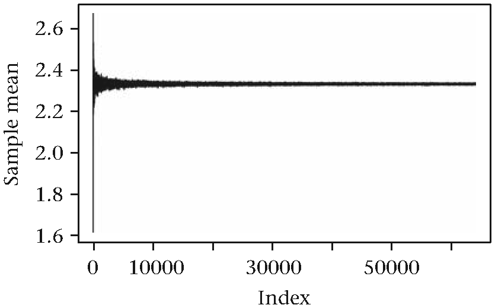
图4.3 大样本量下的收敛
中心极限定理在R里的实现
本例建立在前面代码的基础上。这一次，我们从X重复测量，但样本量不变。
mean_list <- list()
for(i in 1:10000) {
mean_list[[i]] <- mean(sample(X, 10, replace = TRUE))
}
hist(unlist(mean_list), breaks = 500,
xlab = "Mean of 10 samples from X",
main = "Convergence of sample distribution",
cex.main = 0.8)
abline(v = mu, lwd = 3, col = "white", lty = 2)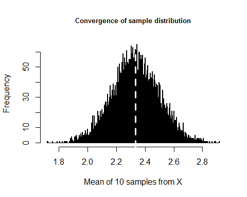
图4.4 向正态收敛
样本均值的分布趋于一个貌似正态的分布！要知道中心极限定理有多强大，在应用于高度非正态的总体。我们创造一个总体，以50%的概率重复抽取0或1.
population <- sample(c(0, 1), 100000, replace = TRUE)
hist(population, main = "Non-normal", cex.main = 0.8)
abline(v = mean(population), lwd = 3, lty = 3)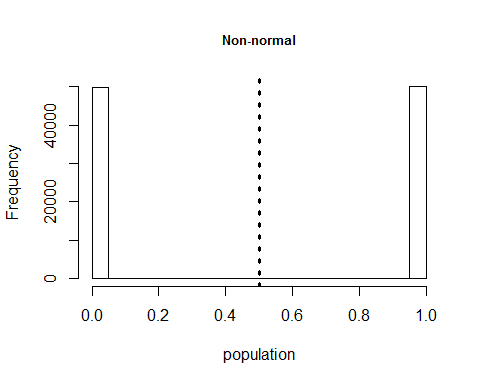
图4.5 非正态总体
从这个高度非正态分布中反复提取样本量为10的样本，我们获得的样本均值分布仍然看起来服从正态分布。
mean_list <- list()
for(i in 1:10000) {
mean_list[[i]] <- mean(sample(population, 10, replace = TRUE))
}
hist(unlist(mean_list), main = "Distribution of averages",
cex.main = 0.8,
xlab = "Average of 10 samples")
abline(v = 0.5, lwd = 3)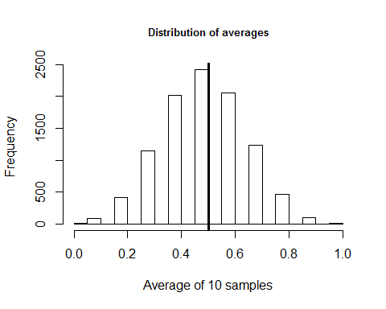
图4.6 非正态样本分布
无偏性和有效性
从业人员花费大量的时间询问有关样本统计量属性的问题，如“样本统计量有多接近真实的总体统计量？”或“我需要多少样本，才能自信地认为样本统计量接近总体统计量？”
理想情况下，好的样本统计量有如下特征：
1. 样本统计量的期望值应该等于真实的总体统计量。估计量的偏度捕捉了这种效应。
2.样本统计量的方差应该越小越好。有效性描述了这种特性。
3.样本分布应该随样本量变大而收敛于真实的总体参数。这被称为估计量的一致性。
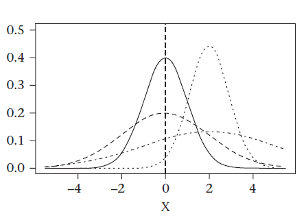
图4.7 偏差和有效性
下面的插图展示了估计量的偏度和有效性之间的差别︰ 真实总体参数是 0。有两个分布，均值都等于总体参数。其中具有较大的方差是有偏和和无效的。方差较小的是无偏和有效的。同样，其他两个显示的分布都是有篇的（因为他们的样本均值没有落在真实的参数水平上）。其中一个比另一个更具有效性[123]。
在之前一个例子中，我们定义总体均值为。巧合的是，总体均值的最佳样本估计量也是样本均值：，其中. 在这个例子中，公式是一致的。为什么恰好是最佳估计量？我们可以试着用上面提及的前两条标准来估计，结果不言而喻。我们想要显示
(4.1)
由于期望的运算是线性的，我们可以毫不费劲地把总和从E中捞出来：
一个描述估计量偏度的经典例子是方差统计量。和之前一样，我们造出已知均值和方差的整个总体。由定义，总体的方差为
下面的函数可以计算方差：
# 总体方差公式
population_variance <- function(x) {
mean <- sum(x) / length(x)
return(sum((x - mean) ^ 2) / length(x))
}
# 创建一个总体
population <- as.numeric(1:100000)
variance <- population_variance(population)
variance
## [1] 833333333将相同的公式用于总体重复抽样的样本时，会发生什么？重复调用population_variance()函数，并设定样本量为100。
output <- list()
for(i in 1:1000) {
output[[i]] <- population_variance(sample(population,
10, replace = TRUE))
}
variance_estimates <- unlist(output)
hist(variance_estimates, breaks = 100, cex.main = 0.9)
average_variance <- mean(variance_estimates)
abline(v = average_variance, , lty = 2, lwd = 2)
abline(v = variance, lwd = 2)
average_variance
## [1] 738123625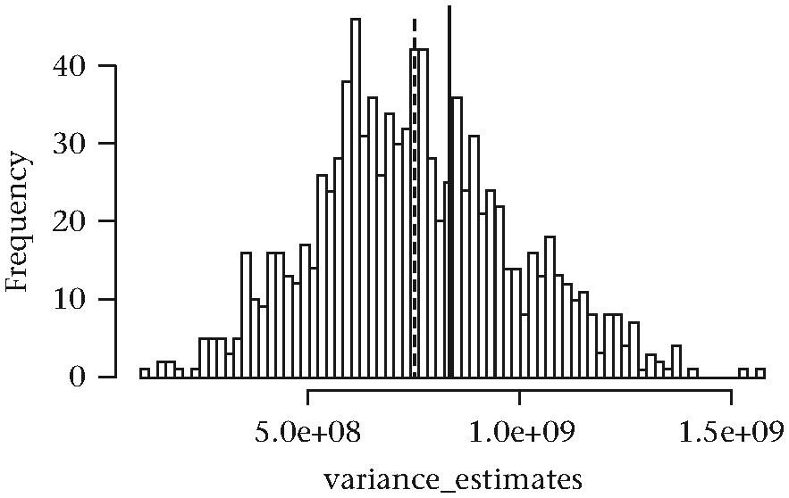
图4.8 估计方差
当我们使用不同于总体统计量公式的样本统计量公式时，会发生什么呢？分布的均值会更接近真实统计量吗？换句话说，我们能不能降低估计量的偏度？答案是肯定的。样本统计量公式如下：
# 无偏方差估计量的公式
sample_variance <- function(x) {
mean <- sum(x) / length(x)
return(sum((x - mean) ^ 2) / (length(x) - 1))
}
output <- list()
for( i in 1:1000 ) {
output[[i]] <- sample_variance(sample(population,
10, replace = TRUE))
}
sample_variance_estimates <- unlist(output)
average_sample_variance <- mean(sample_variance_estimates)
average_sample_variance
## [1] 836184961分母为N-1的新公式似乎比总体方差公式更好地逼近真实的方差。显而易见，836184961比738123625更接近833333333. 但这是模拟所导致的人为效果吗？这一结果其实可以在数学上被严格证明。
(4.5)
分母从N换成N-1，可以消去乘积项.
(4.6)
我们可以推断，分母中的N−1项有助于提高数值结果以弥补为估计样本均值而损失的自由度。样本均值也出现在上面公式中。以上是在统计学入门教科书中经常遇到的解释。它可以帮助解释简单的例子，但当事情变得更复杂，这种中学启发式教学法就失效了。考虑总体标准差的无偏估计量。这儿是暗示︰它并不是无偏的方差估计量的平方根。
(4.7)
对于一个正态分布的总体，正确而无偏的标准差统计量是
(4.8)
校正因子C4 的计算公式为
（4.9）
该公式是詹森不等式3的结果，以及期望运算的定义。是已知的gamma函数，定义为
（4.10）
对正整数N，gamma函数可简化为
（4.11）
目前为止，我们只研究了统计估计量的偏差。偏差可以表达为 。 估计量的效度也是一个定义均方误差Mean Square Error(MSE)的重要度量。MSE是一个描述估计量准确度的测量。统计量的MSE可以分解为该统计量的方差（效度）和偏差[38]。
(4.12)
上述公式称为偏差方差分解，它告诉我们，对于给定的均方误差，偏差和方差之间总是存在折衷。我们还注意到无偏估计()的MSE恰恰是估计量的方差。
一致性是另一个我们希望看到的估计量属性。一致估计量是当样本大小接近无穷大时其偏差和方差接近0的估计量。考虑下图。值得注意的是，对于小样本量，抽样分布如何偏离真实参数 。随着样本量变大，分布的均值趋向于真实的参数值，分布的方差接近于零。当样本量N等于总体时，不确定性所剩无几。
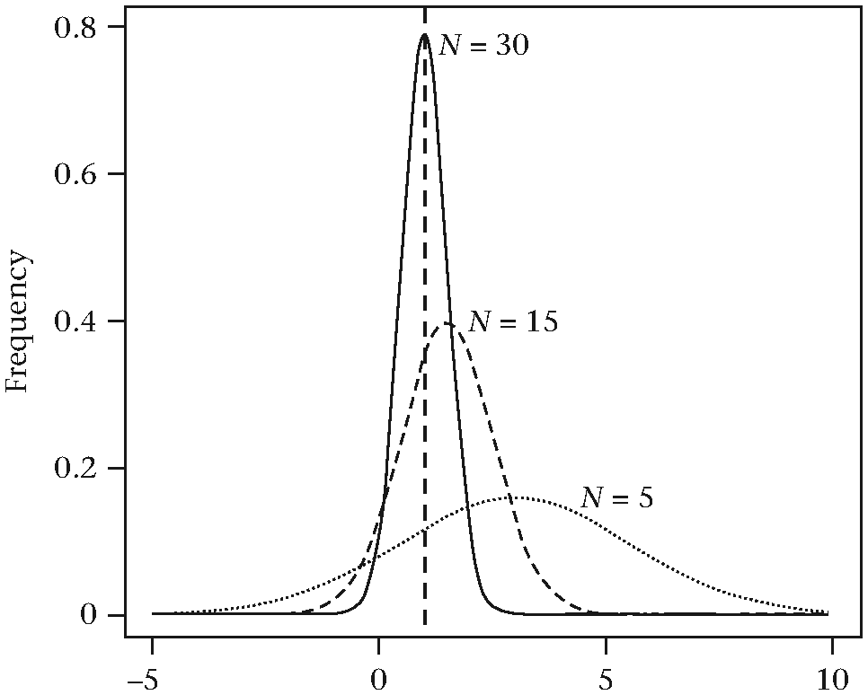
图4.9 估计量的连续性
为什么我们量化交易员需要关心偏差，有效性和一致性？当我们开始思考如何为交易策略开发模型时，一个不可避免的任务是，基于可观察数据对模型进行参数估计。我们必须对数据本身和需要拟合的参数做出假设。提出相关统计量来逼近假设性的全局参数就变得非常重要。为具体阐述这一点，请考虑以下情形：
假如我们在酝酿一个做市策略，在其他各种可能的操作中，它根据当前实现的市场波动率动态调整其愿意持有的库存量。从近期可观察到的市场数据，如何确定当前市场实现的波动性？一种方法是首先假设一种底层机制，可观测的价格由之产生，例如，如下所示的模型4：
(4.13)
这是一个含有单一未知参数的模型：即时方差 。把它想象为总体参数。我们可否得出一个可以推出真实方差的一个估计我们可以进一步追踪金融工具的历史价格。实际上，这样的估计量确有不少，较为常用的有以下几个：
- Parkinson估计量
- Yang估计量
- Garman-Klass估计量
其导数和统计特性的细节都超出了本书范围。总的来说，它们都试图平衡偏差和方差，同时保持计算易处理。尾注给出了估计量的一个概览5。
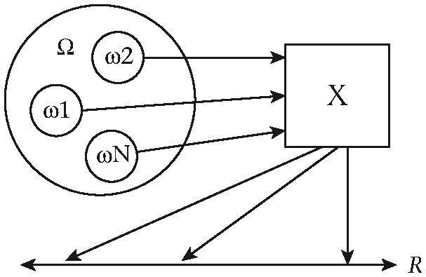
图4.10 作为映射的随机变量
概率基础
概率论是数学的一门分支，试图量化事件的内在不确定性。概率间接指代不确定性，可以把它想象为0到1之间的一个数，用来表达某个特定事件发生的可能性。难题在于将不确定性映射到概率。概率论随之接手任务，利用概率产生有用的结果。这里有更多需要牢记的定义。以数学的角度，这些定义都不够严格，但足以传达概率论的重要概念。
我们可以将一个实验简单定义为，从随机过程收集数据的一种方法。一个样本空间则是这个实验的所有可能结果的集合。在这种背景下，样本有着完全不同于以前讨论中关于样本统计量的意义。
举个例子，如果实验被定义为投掷一枚硬币，那么样本空间是集合｛正，反｝。如果实验被定义为投掷两枚硬币，样本空间就变为｛｛正，正｝，｛正，反｝，｛反，正｝，｛反，反｝｝。如果实验是产生股票价格，那么样本空间可以看作区间所有可能的实数。一个给定股票的价格跌为0是可以想象的。无论可能性多么低，Google股票也可能升至每股10,000,000美元。
随机变量
一个随机变量是从样本空间的元素到实数的一个映射。下面的关系图说明了这一点：
通常我们将随机变量记为大写字母。样本空间本身通常记作大写的希腊字母欧密嘎（）。样本空间的一个元素记为小写的欧密嘎（）. 数学标记为，其中.
在我们的抛骰子实验中，可以将随机变量定义为为
为什么是32和65.2？为什么不呢？随机变量的定义中并没有指定将什么实数分配给公式的右边。但是，为了解决某些问题，使用某些数字会更有意义。这里是一个可能更加直观的映射：
或者，另一种可能的取值如下：
股票价格过程呢？什么样的映射有意义？由于可能的股票价格的样本空间已经由正的实数组成，我们可以只使用那些值作为映射。
概率
接下来，我们需要谈谈概率。可以把它们看作分配给随机变量每个取值的权重。概率是描述一个特定事件发生似然性的一种量度。概率可以取0到1之间的任何实数。概率为零意味着事件绝对不可能发生，而概率为1则暗示事件必定会发生。
更正式地，根据柯尔莫哥洛夫（Kolmogorov），我们可以考虑概率必备的三个基本属性[63, 134]。
1. E是样本空间的一个事件，它的概率是一个大于等于零的实数。
2. 一个样本空间的所有事件概率之和为1.
3. 互斥事件并集的总概率等于独立事件概率之和。
概率分布
概率分布是将概率分配到随机变量结果的函数。对于取离散的随机变量，我们使用概率质量函数来表示y轴上的概率和在x轴上的随机变量的值。下面的概率质量函数，描述了投掷一枚硬币实验的随机变量。
(4.21)
plot(c(-1, 1), c(0.5, 0.5), type = "h", lwd = 3,
xlim = c(-2, 2), main = "Probability mass function of coin
toss",
ylab = "Probability",
xlab = "Random Variable",
cex.main = 0.9)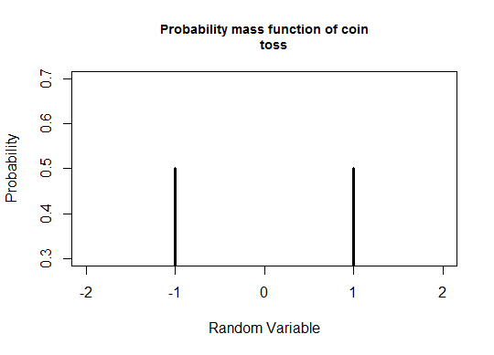
图4.11 硬币投掷的概率质量函数
概率质量函数的暗示了一枚公平的硬币，因为每个面发生的概率是0.5，另外一个重要属性是它的概率之和为1。
(4.22)
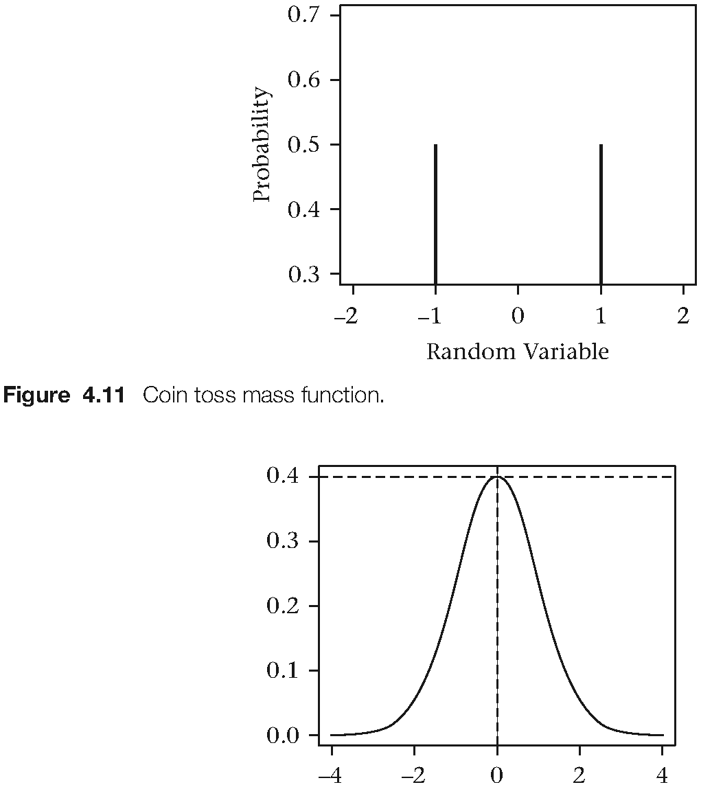
图4.12 正态分布
概率质量函数的表示只能用于离散型分布。对于连续型分布，概率之于一个实数而言是毫无意义的，因为它永远是0.变通的方法是将一个概率赋予一段值。一个最重要的连续概率分布是高斯分布。概率质量函数曲线下的面积为1。数学表达式如下：
(4.23)
有趣的是，正态分布的极大值发生在x = 0 处。在这一点，有。但是，说
却是错误的。X随机变量可以取负无穷到正无穷的任意值。从这个区间取得任何一个随机X的概率为0。这就是为什么有。下面这个表达式更为准确：。它的意思是，图下面从负无穷到0的面积等于0.5。
当在R里绘制概率分布时，y轴的值大于1是完全可能的。这可能让你发问了，如果你把y轴想象成实际的概率。对于离散型随机变量，这没错。但对于连续型，这并不对。对于离散随机变量，曲线下方的面积必须等于1。高度依据直方的宽度进行调整以令其面积等于1。
一些常用的连续型分布图在下面列出：
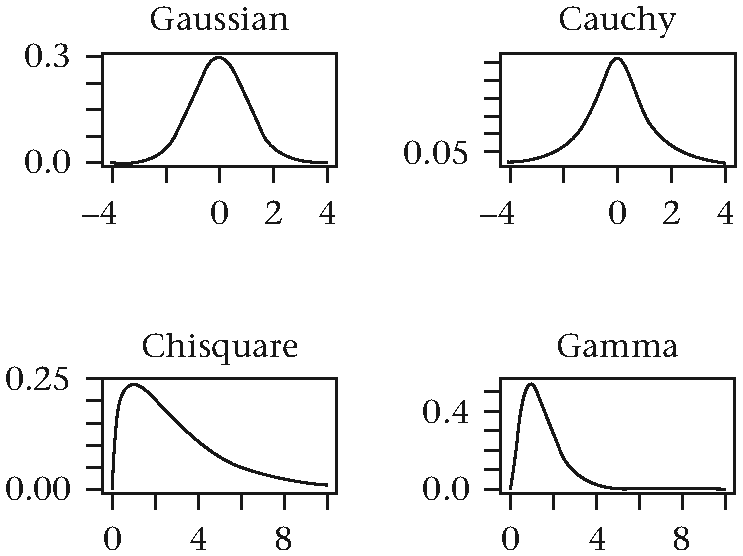
图4.13 连续分布示例
贝叶斯和频率方法
再次考虑抛硬币实验。可以想象，一枚硬币可能以边缘着陆并竖直站立。另外，这枚硬币也可能在着陆前消失在了稀薄的空气中。所以我们当然可以给这些事件分配概率。P(X = Head) = 0. 499, P(X = Tail) = 0. 499, P(X = Edge) = 0. 001, P(X = Disappears) = 0. 001。尽管这类边缘事件极为罕见，我们仍然必须确保总概率为 1。但我们怎么将有关将概率指派给此类事件呢？
这是一道主观题，答案也极为主观。数学家已经为此辩论了几个世纪，我们这里也就不再探讨细枝末节了[135]。在这个问题上，主要有两种思想。频率学派将概率定义为大量实验的相对频率的极限，然而贝叶斯方法认为概率是基于新到来的数据而改变的[115, 122]。
贝叶斯思想中，数据是唯一。数据塑造了概率，而不是相反。数据隐含地改造任何参数的分布，对于一个特定现象进行建模，参数会随着分布而改变。贝叶斯法则提供更新这种分布的机制。这条规则可以由下列公式表示︰
(4.24)
这一公式指出，给定数据已知时证据的概率（我们对证据的信念）等于证据给定时数据的概率乘以没有任何数据时证据的概率。公式中的分母实际上是一个比例因子，用来计算结果。的数学表达式是后验分布。表达式是似然函数。是先验分布。
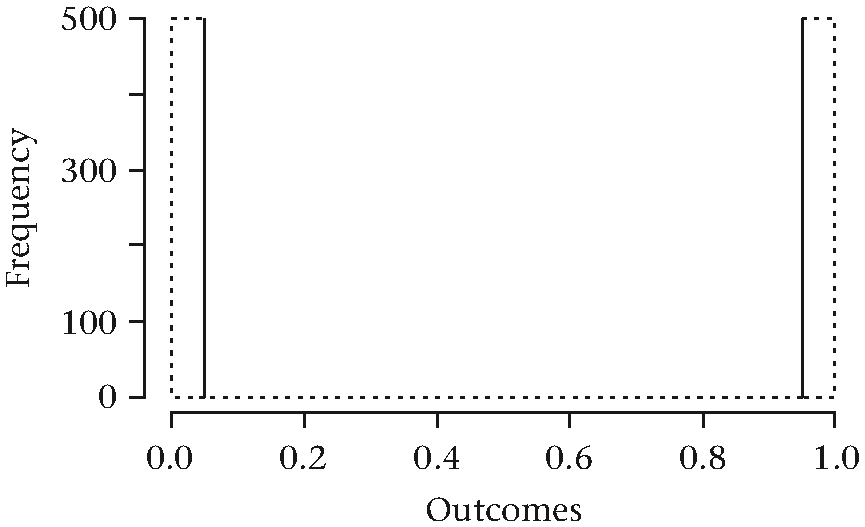
图4.14 硬币翻转的密度
掷硬币模拟器
接下来的几行R代码模拟了抛掷硬币1000次的结果。产生一组为0的向量表示反面，1表示正面。样本空间｛正，反｝到0和1是一组映射。用生成的向量估计实验的内在概率。
outcomes <- sample(c(0, 1), 1000, replace = TRUE)结果的直方图类似下图：
大约500个正面和500个反面通过函数sample()而产生。一个频率学派可能声称，每次发生正面或反面事件的概率均为500/1000。而实际上，每一面的观察值应该除以试验总次数。
下面，我们考虑用一枚有偏差的硬币进行实验。仍然使用函数sample()，但重新定义正面出现的默认概率。
set.seed(101)
biased_outcomes <- sample(c(0, 1), 1000,
replace = TRUE, prob = c(0.4, 0.6))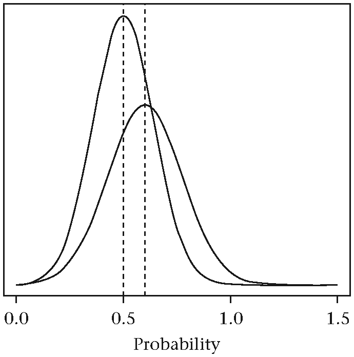
图4.15 贝叶斯先验与后验
现在，获取任何数据之前, 频率学派认为，没有办法定义{head}事件发生的概率。只有数据开始进来后才能估计概率。另一方面，贝叶斯概率始于一个隐含假设，即概率在50%附近。这种信念以先验分布来表达。先验甚至可能不同于一个公平的硬币假设。它取决于贝叶斯学者的心情和偏见。这里的细微差别是贝叶斯学派表达意见之前没有见过任何数据，而频率学派则不然。随着数据开始流入，频率和贝叶斯都将更新他们对正面发生概率的估计。在运行结束时，频率学派的最终结果为点估计：
prob_estimate <- sum(biased_outcomes) /
length(biased_outcomes)
prob_estimate
## [1] 0.603贝叶斯先验会随着新鲜信息到达而改变。最后，它的均值会趋向真正的概率。连续更新过程的最终结果是一个后验概率，而不是点估计。下图中，均值从0.5移向0.6. 后验的变化是先验的变化和数据特征的函数。
最后，两者对正面发生概率的估计达成一致。但在很多其他估计问题中，先验的选择可能严重影响最后得出的参数估计值。
如果你还想进一步了解关于有偏硬币的贝叶斯方法论，可以参考链接里的例子：http://www.win-vector.com/blog/2014/07/frequenstist-inference-only-seems-easy/.
关于RStan的使用
这个话题稍微深入，但值得一提。使用Stan概率语言可以完整地进行贝叶斯统计推断[105]。这里是Stan的项目主页：http://mc-stan.org/.。Stan是由美国顶级高校和研究机构参与的一个多团队合作项目。它包含高效的MCMC抽样（马尔科夫链蒙特卡洛）和用C++写成的优化方法。用这些算法进行贝叶斯推断非常有用，而且幸运地，R也有Stan接口。这个包叫RStan，这里是安装说明：https://github.com/stan-dev/rstan/wiki/RStan-Getting-Started. 注意，RStan不能直接从CRAN安装。它需要用C++编译器来编译Stan指定的概率模型。如果这里的讨论让你感觉意犹未尽，强烈建议将RStan收入你的工具箱，以便进一步探索贝叶斯分析和建模技术。
总结
本章对统计和概率入门课程的一些有用又实用的话题作一概述。介绍了样本和总体统计量之间的差别，和统计估计量的思想。总括描述了大数定律和中心极限定理，伴随R代码示例以阐明概念。讨论了统计估计量的无偏性、有效性和一致性，展示了这些优良特性对抽样分布的的影响。最后，解释了MSE的偏度-方差分解，简要提及贝叶斯学派和频率学派对概率的不同主张。推荐RStan扩展包给想要进阶分析的用户。
翻译：杨环 审校：冯凌秉